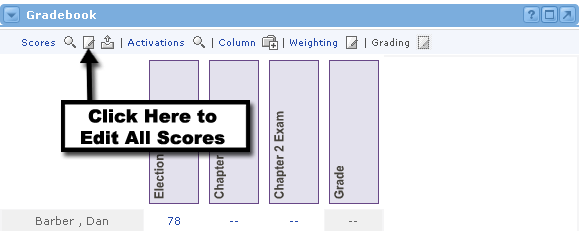
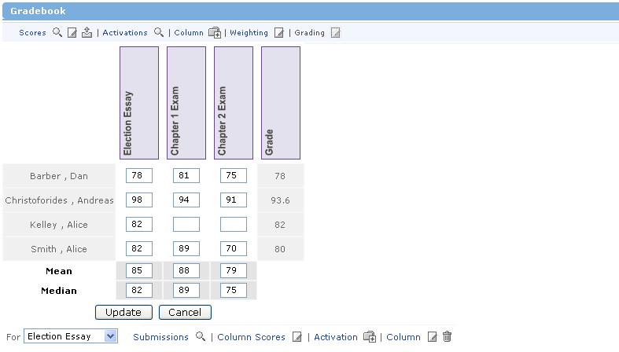

Edit All Gradebook Scores
It may become necessary or desirable to edit all of the scores in your gradebook at once, rather than having to edit each column separately. If this is the case, simply follow these steps:

- Locate the gradebook and click the Edit icon at the top of the channel next to the Scores link.
- You will now see all scores listed in editable text fields.
- Edit the scores as needed. Click the Update button when finished.
- You will now see the updated Gradebook page. Notice that the Mean, Median, and final Grade scores have also been recalculated
